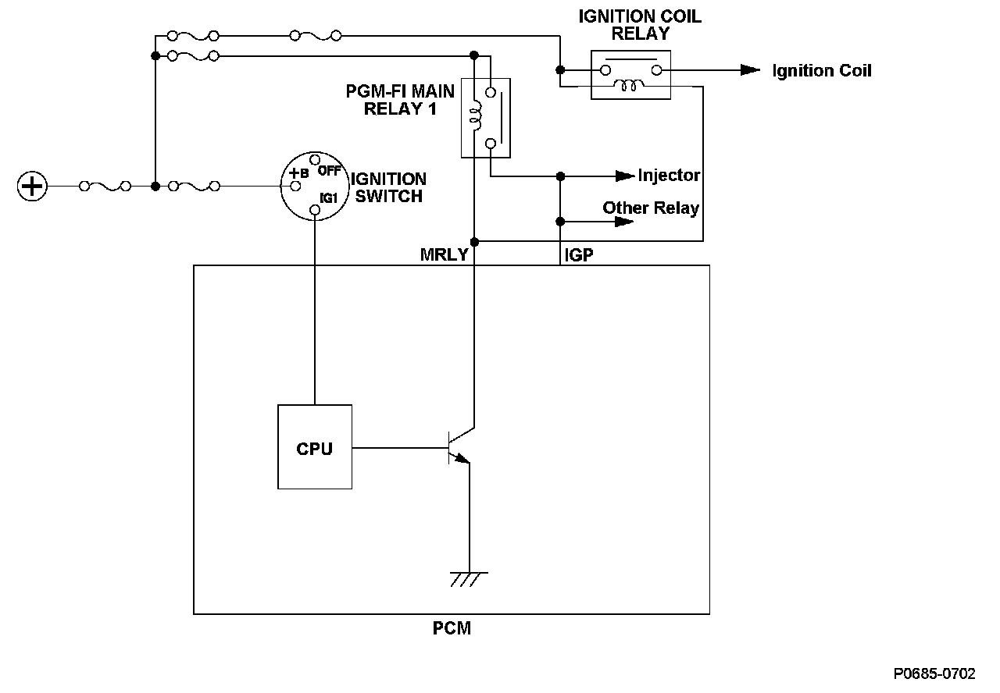
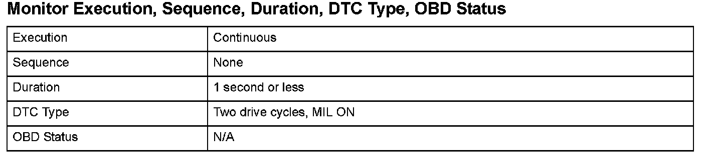
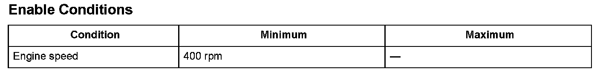

Advanced Diagnostics
DTC P0685: Powertrain Control Module (PCM) Power Control Circuit/Internal Circuit Malfunction
General Description
After the ignition switch is turned off, the powertrain control module (PCM) does not shut down immediately. After finishing a predetermined process according to the request of each device and system, the power supply is automatically disconnected (self shut-down function). The PCM power is disconnected by controlling PGM-FI main relay 1.
During a normal PCM shut down, the shut down process is executed by the CPU, PGM-FI main relay 1 is turned off, and the voltage to the PCM is turned off to shut down the PCM. When the voltage to the PCM is turned off and the PCM shuts down without the normal shut down procedure, a malfunction in the PGM-FI main relay 1 control circuit is detected and a DTC is stored.

Monitor Execution, Sequence, Duration, DTC Type, OBD Status

Enable Conditions
Malfunction Threshold
The PCM is shut down without the normal shut down procedure.
Diagnosis Details
Conditions for illuminating the MIL
When a malfunction is detected during the first drive cycle, a Temporary DTC is stored in the PCM memory. If the malfunction recurs during the next (second) drive cycle, the MIL comes on and the DTC and the freeze frame data are stored.
Conditions for clearing the MIL
The MIL will be cleared if the malfunction does not recur during three consecutive drive cycles in which the engine conditions are similar to the first time the malfunction was detected.
The MIL, the DTC, the Temporary DTC, and the freeze frame data can be cleared by using the scan tool Clear command or by disconnecting the battery.